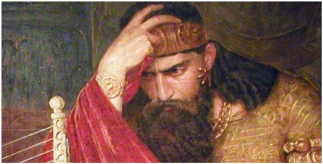

a Benjamite representative of northern, Israelite interests, challenges the Philistines in the hill country, rules Ephraim, and is supported by Elide priests of Shiloh, leading to conflict with Samuel. Saul is crowned king, offers sacrifice when Samuel is late and for that is blamed by Samuel. David comes to Saul’s court as a soldier, plays his flute for Saul, now portrayed as a solitary paranoiac, and becomes his armor-bearer. David volunteers to Saul to kill Goliath and tries on Saul’s armor. David kills the 9-foot tall Goliath. Samuel orders Saul to “kill all the Amelekites,” but Saul takes Amelikite king Agog prisoner, whom Samuel kills. Samuel condemns Saul a second time for not killing Agog, and claims God has removed his blessing from Saul, so Samuel anoints David, and “the spirit of YHWH” (saving grace) is transferred from Saul to David. Saul’s son Jonathan loves David, and gives him his clothes (sign of abdication to David?). David’s fame as a military hero exceeds that of Saul (1Sam18), so Saul is jealous of David. Saul’s daughter Michal marries David; David flees to Samuel; Saul’s messengers sent to find David all begin prophesying; David flees to Achish, the Philistine king of Gath, where he gathers a rebel army in the service of Achish, whose forces kill Saul and Jonathan at Mount Gilboa, a battle from which David is suspiciously written out. The people of Judah come to Hebron and anoint David, who rules Judah from Hebron for seven years. He carries on good relations with the Philistines, and allies with Nahash, king of Ammon, enemy of Israel (1Sam11, 2Sam10, 17). A long war then ensues between David and the house of Saul (2Sam2)

1000 Ishbosheth is Saul’s rightful heir (and, unfortunately for him, a Northerner). Abner, Saul’s cousin, is the real power behind Ishbosheth. David is at this time allied with the Philistines. Abner accesses Saul’s harem as the first step to taking power, is chastised, begins negotiations with David, comes to David at Hebron, seals the agreement betraying Ishbosheth, and is then and there assassinated by David’s military commander, Joab (David is aghast!) ; then Ishbosheth is assassinated (David is unconsolable!).
~~~~~~~